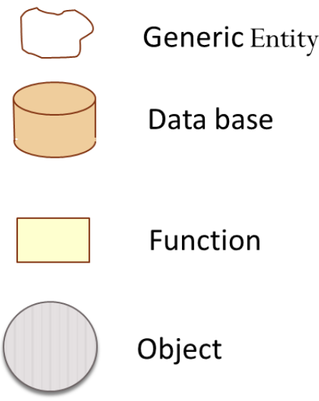

Costruire software¶
Il software puo essere definito come:
l’insieme di frasi espresse in un qualche linguaggio formale al fine di istruire un elaboratore o una rete di elaboratori,
Il software non ha consistenza fisica; può consumare energia ed altre risorse, produrre effetti utili o dannosi, avere conseguenze rilevanti sul piano economico e sociale, ma il software è del tutto privo di massa.
Le conseguenze di questa caratteristica sono molteplici, sia sul piano pragmatico che sul piano filosofico. Limitando il discorso al contesto della produzione industriale, si è diffusa la convinzione che la costruzione del software non richieda, per sua natura, processi di produzione tipici dell’ingegneria tradizionale.

Per meglio comprendere questa differenza e anche la profonda relazione tra scienza e ingegneria possiamo riflettere sul seguente problema:
costruire un sistema software che operi come una mente unama
Ingegneria¶
Nell’ingegneria tradizionale (meccanica, edile, etc) il costo del materiale costituisce spesso più del 50% del costo totale di un progetto, mentre nella produzione del software è il costo del lavoro ad essere preponderante: si parte dal 70% fino a giungere quasi al 100%.
L’ingegneria tradizionale ha anche sperimentato che un cambiamento di costo 1 in fase di analisi potrebbe costare 1000 in fase di produzione.
Per questo l’ingegneria classica diversifica le fasi di produzione delineando un ben noto flusso di lavoro (workflow) costituito da un insieme di passi (o tasks):
definizione dei requisiti,
analisi del problema,
progetto della soluzione,
realizzazione del prodotto,
collaudo
messa in opera
spesso eseguiti uno dopo l’altro, in un classico processo di sviluppo sequenziale o a cascata.

Programmatori = (non) ingegneri?¶
Nella produzione industriale del software è piuttosto comune cercare di abbattere i costi di progetto e di sviluppo, anche limitando le dimensioni del gruppo di lavoro. Spesso si cerca anche di aggredire il mercato prefissando una data di distribuzione del prodotto, che viene di frequente rilasciato non completamente finito, accollando all’utente parte dell’onere di collaudo.
Sotto la spinta di stringenti vincoli di time to market (TTM) molte aziende adottano uno schema del tipo “scrivi, prova e correggi”, mirando alla produzione di codice al minor “costo immediato” possibile. Le fasi di analisi e progetto anche se accuratamente svolte, non sempre sono adeguatamente documentate, e quasi mai corralete in modo sistematico con il codice prodotto.
Sviluppo bottomUp¶
Il processo di costruzione del sofware è quindi influenzato da una potente forza, legata alla natura stessa del software: la spinta a impostare la costruzione in modo bottom-up, a partire da una specifica tecnologia costituita da un linguaggio di programmazione, o da un framework applicativo o da una piattafforma operativa.

La principale conseguenza negativa di questa forza è molto spesso la mancata valutazione di alternative tecnologiche in fase di analisi del problema e l’assenza di una esplicita descrizione di progetto che permetta di anticipare la valutazione dei rischi e le potenziali difficoltà connesse allo sviluppo. In molti casi adeguate fasi di analisi e di progettazione hanno luogo, anche in modo sistematico; ma ciò putroppo quasi sempre accade solo nella mente dei programmatori; nel codice finale non vi è più traccia alcuna di queste fasi, se non qualche debole segnale legato a sporadici commenti.
Tuttavia, anche se il codice fosse accuratamente documentato, sia in relazione all’analisi, sia in relazione alle scelte di progetto, la riduzione del prodotto al solo codice sarebbe non accettabile, se non nel caso di sistemi software semplici o di software molto ben fatto.
All’aumentare della complessità infatti, la mente umana ha bisogno, per comprendere, di decomporre il problema in parti di ampiezza limitata, articolando la descrizione in livelli di astrazione diversi; poiché il codice deve inevitabilmente esprimere il sistema finale nei suoi minimi dettagli, la maggior parte delle persone sarebbe incapace di leggerlo con profitto anche se a conoscenza delle regole sintattiche del linguaggio di programmazione.
Per questo si parla spesso di modelli, che vengono espressi con opportuni linguaggi, di solito in forma grafica.
Modelli¶
Nel linguaggio comune, il termine modello è spesso usato per denotare un’astrazione di qualcosa che esiste nella realtà, come ad esempio il modello che posa per un artista, una riproduzione in miniatura, un esempio di modo di svolgere un’attività, una forma da cui ricavare vestiti, un ideale da seguire, etc..
Alcuni (tra cui gli ingegneri) intendono per modello un sistema matematico o fisico che ubbidisce a specifici vincoli e che può essere utilizzato per descrivere e comprendere un sistema (fisico, biologico, sociale, etc.) attraverso relazioni di analogia.
Nel contesto dei processi di costruzione del software, il termine modello va primariamente inteso come un insieme di concetti e proprietà volti a catturare aspetti essenziali di un sistema, collocandosi in un preciso spazio concettuale.

Per l’ingegnere del software quindi un modello costituisce una visione semplificata di un sistema che rende il sistema stesso più accessibile alla comprensione e alla valutazione e facilita il trasferimento di informazione e la collaborazione tra persone, soprattutto quando è espresso in forma visuale.

Nel concepire un modello come visione semplificata di un sistema software si assume che il sistema abbia già una sua esistenza concreta. In alcune fasi di lavoro (in particolare nella fase di analisi) il sistema è il modello; un raffinamento o una variazione del modello corrisponde in questo caso ad una variazione del sistema.
La produzione esplicita di modelli si rivela utile in quanto i diversi attori di un processo di produzione di software (committenti, analisti, progettisti, utenti, etc) operano a diversi livelli di astrazione e con fini diversi.
Definendo opportuni modelli del sistema da realizzare, in ogni fase del processo di produzione l’attenzione può essere focalizzata sugli aspetti rilevanti in quella fase, utilizzando una forma di comunicazione comprensibile ad attori diversi. Per garantire coesione e interoperabilità, si cerca di individuare regole di corrispondenza e di trasformazione automatica tra modelli.
La crisi del software¶
Impostare un processo di produzione in assenza di descrizioni del sistema che permettano di anticipare la valutazione dei rischi espone il processo stesso a un potenziale fallimento; non meraviglia dunque che si senta spesso parlare di crisi del software.
La letteratura (si veda ad esempio SEDisasters) riporta casi di fallimento di un numero sorprendentemente rilevante di progetti software, evidenziando un insieme di cause principali:
Cattiva specifica e gestione dei requisiti.
Comunicazioni ambigue ed imprecise tra i diversi attori del processo di produzione (utenti, manager, analisti, progettisti, implementatori).
Architetture finali del sistema fragili (non robuste).
Inconsistenze tra requisiti, progetto e realizzazione.
Collaudi inadeguati o insufficienti.
Inadeguata capacità di valutare e gestire i rischi e di controllare la propagazione dei cambiamenti.
Queste potenziali fonti di insuccesso hanno amplificato la loro influenza nel momento in cui l’intera disciplina ha vissuto la transizione da una dimensione prevalentemente algoritmico-trasformazionale a un dimensione fortemente sistemistico-architetturale.
Richiami¶
Il ruolo dell’architettura¶
La moderna costruzione del software riconosce all’architettura del sistema un ruolo strategico, nonostante il termine architettura sia tra i vocaboli più sovraccarichi di significato.
Normalmente, si parla di architettura di un sistema quando ci si vuole riferire all’insieme delle macro-parti in cui il sistema si articola, includendo le loro responsabilità, relazioni e interconnessioni.
Per molti, il termine architettura potrebbe però evocare l’immagine di uno schema in cui compare una rete di blocchi e linee di connessione; questa visione andrebbe meglio indicata col termine mappa.
Per altri, l’architettura evoca l’idea di uno schema concettuale di soluzione riferito a un certo dominio applicativo, come ad esempio nella frase architetture web; in questo caso sarebbe più appropriato utilizzare il termine framework.
L’ Open Group Architectural Framework (OpenGroupArch) definisce architettura:
“a set of elements depicted in an architectural model and a specification of how these elements are connected to meet the overall requirements of an information system”.
Altrove si dice che:
“the software architecture of a program or computing system is the structure or structures of the system, which comprises software components, the externally-visible properties of these components and the relationships among them”.
La IEEE Computer society definisce (nel 2000) l’architettura:
“the fundamental organization of a system embodied in its components their relationships to each other and to the environment, and the principles guiding its design and evaluation”.
Tra le altre accezioni possibili, una delle più curiose, su cui vale la pena di riflettere, è quella per cui:
l’architettura è ciò che rimane di un sistema quando non si può più togliere nulla, continuando a comprenderne la struttura e il funzionamento.
Le prime esperienze collettive nello studio delle architetture software possono essere fatte risalire al workshop OOPSLA del 1981 guidato da Bruce Anderson che mirava allo sviluppo di un “architecture handbook”.
Design patterns¶
Agli anni 90 del secolo scorso può anche essere fatto risalire l’idea di pattern, culminata nella pubblicazione nel 1995 dell’ormai famoso testo sui Design Pattern della così detta GoF (Gang-of-Four: Erich Gamma, Richard Helm, Ralph Johnson e John Vlissides).

Da allora si sono susseguiti molte altre conferenze e lavori. I riferimenti più noti sono i cinque testi POSA (si veda in libri ) sulle Pattern oriented Software Architectures e i convegni PLoP (Pattern Languages of Programming).

Dimensioni¶
Sia nella fase di analisi che in quella di progetto, la descrizione di un sistema software può avvenire focalizzando l’attenzione su almeno tre diversi punti di vista:
l’organizzazione del sistema in parti (struttura);
il modo in cui le diverse parti scambiano informazione implicita o esplicita tra loro (interazione);
il funzionamento del tutto e di ogni singola parte (comportamento).

Questi punti di vista costituiscono tre indispensabili dimensioni in cui articolare lo spazio della descrizione del sistema, qualunque sia il linguaggio utilizzato per esprimere questa descrizione.
Struttura¶
Dal punto di vista strutturale, le funzioni (o le procedure) e gli oggetti costituiscono componenti fondamentali, largamente in uso nei programmi non distribuiti, anche di piccole dimensioni. Nel seguito, cercheremo di rappresentare ciascuno di essi con una forma grafica convenzionale, come ad esempio:
Nel contesto di un sistema software distribuito, componenti-base come le funzioni si trovano all’interno di altri componenti, che possiamo qui indicare genericamente come macro-componenti. Anche per questi, è opportuno introdurre una forma grafica convenzionale, come, ad esempio:

Per impostare in modo sistematico la definizione a livello strutturale di un sistema è conveniente, sia in fase di analisi sia in fase di progetto, cercare di dare risposta ad alcune domande relative alla natura dei suoi componenti, quali ad esempio:
il componente è attivo (dotato di un proprio flusso di controllo)? Se il componente non ha flusso di controllo autonomo, noi diremo che è un oggetto.
il componente è atomico o composto? Nel caso sia composto quali sono le parti che lo formano?
il componente è dotato di stato modificabile? In caso affermativo, quali sono le operazioni di modifica dello stato?
quali proprietà (attributi) caratterizzano il componente?
da quali altri componenti dipende e secondo quale tipo di dipendenza?
Si noti che un componente non atomico implica la definizione ricorsiva della struttura di ogni parte e la definizione di operazioni denominate selettori che forniscono (riferimenti a) i componenti costituenti.
Interazione¶
Le interazioni tra oggetti avvengono tramite procedure-call, cioè a trasferimento di controllo.
Le interazioni tra componenti attivi possono avvenire trameite oggetti condivisi, allocati su memoria comune, oppure tramite messaggi che riguardano informazioni o stream di dati e che possono essere scambiati in forma sincrona, asincrona o isocrona.
In una interazione asincrona, la comunicazione è “bufferizzata” senza alcuna limitazione sulle dimensioni del buffer. L’emittente non deve attendere alcuna informazione di ritorno anche quando invia informazione ad uno specifico destinatario. Il ricevente attende solo quando il buffer è vuoto. Nel caso di stream, non vi sono vincoli di tempo per la ricezione.
In una interazione sincrona, la comunicazione avviene senza l’uso di alcun buffer. L’emittente e il desinatario scambiano informazione unificando concettualmente le proprie attività. Nel caso di stream, il destinatario si aspetta di ricevere i dati con un ritardo (delay) che non supera un massimo prefissato.
Una interazione isocrona riguarda solo stream; il destinatario si aspetta di ricevere i dati con un delay compreso tra un minimo e un massimo.
Le interazioni a messaggi vengono anche spesso suddivise secondo quattro pattern principali:
Fire and forget: il caso di invio di messaggi.
Sync with server: il caso request-response.
Poll objects: il sender invia una request delegando ad un oggetto (poll object) la responsabilità di ricevere la risposta. Il sender usa il poll object per verificare ed acquisire la disponibilità della risposta.
Result callback: il sender invia una request specificando un oggetto (callback object) che implementa un metodo che verrà invocato dal supporto non appena il receiver invierà la risposta.
Torneremo diffusamente su questi punti, che costituiscono il cuore del passaggio da OOP a message-passing.
Terminologia di riferimento¶
Nel seguito, faremo riferimento alla seguente terminologia:
Messaggio (message): termine generico per denotare informazione scambiata mediante l’uso di un opportuno supporto di comunicazione.
Dispaccio (dispatch): messaggio inviato in modo asincrono a N (N>=1) specifici destinatari, noti alla emittente, con l’aspettativa che questi lo ricevano e lo elaborino; l’emittente non si aspetta alcuna informazione di ritorno.
Invito (invitation): messaggio inviato a N (N>=1) destinatari, con l’aspettativa che almeno uno lo riceva e invii al mittente un messaggio di conferma.
Conferma (ack): messaggio inviato al mittente di un invitation. Il contenuto del messaggio rappresenta un riconoscimento di avvenuta ricezione.
Richiesta (request): messaggio inviato a uno specifico destinatario; il contenuto del messaggio rappresenta la richiesta di esecuzione di una attività, con aspettativa da parte del mittente che questa attività si concluda con una risposta pertinente alla richiesta.
Risposta (reply, response): messaggio inviato da un destinatario al mittente di una richiesta. il contenuto del messaggio rappresenta informazione pertinente alla richiesta.
Evento (event): messaggio emesso (più o meno consapevolmente) in modo asincrono da una sorgente senza alcuna particolare nozione di destinatario e senza alcuna aspettativa da parte dell’emittente.
Segnale (signal): messaggio emesso in modo consapevole e asincrono a N (N>=1) destinatari, noti o meno all’emittente, con l’aspettativa che venga ricevuto da qualcuno, al fine di eseguire un’azione che potrebbe portare vantaggio all’emittente, al ricevente e/o al sistema nel suo complesso.
Per denotare in forma grafica questi diversi tipi di messaggi, faremo riferimento a simboli come quelli della figura che segue:

Un problema ‘applicativo’¶
WORKTODO: Request after a request
Discutere la forma di interazione in cui un componente A invia una request X a un componente B e questi risponde solo dopo avere ricevuto da A la risposta a una sua request Y.
Esempio: A chiede a B di inviargli la fattura di un ordine ma non gli dice a quale indirizzo, per cui B lo chiede ad A prima di rispondergli con il documento richiesto.
Comportamento¶
Per esprimere il comportamento di un componente software, si distinguono classicamente tre diversi ‘stili’:
imperativo
funzionale
logico-dichiarativo
Il funzionamento di un componente comporta spesso l’individuazione di un insieme di operazioni primitive, sulla base delle quali costruire ogni altra operazione di manipolazione/gestione del componente.
Si pensi per esempio al caso di un oggetto lista, le cui primitive
sono il costruttore cons, i selettori head, tail e il predicato empty. Un volta data la lista vuota (l’oggetto emptyList)
ogni lista può essere costruita e manipolata attraverso l’uso di queste primitive.
Spesso si qualifica il comportamento di un componente facendo riferimento a tipi diversi di macchine astratte, iniziando dalla Turing Machine (TM), che individua, in stile imperativo, le mosse-base (primitive) di un automa che permette di realizzare qualunque calcolo.

Si veda Raspberry Pi TM
Un automa equivalente che ottiene lo stesso risultato con una sorta di Linguaggio assembly minimale è la Minsky Machine (nota anche come Counter Machine):

Un tipo meno potente di macchina astratta rispetto alla TM è il pushdown automaton (PDA) che però è l’automa di riferimento per il riconoscimento delle frasi di un inguaggio con sintassi context-free, di tipo 2 nella gerarchia di Chomsky .
Automi a stati finiti¶
Un ulteriore tipo di automa meno potente della TM, ma su cui si fonda sia la TM sia il PDA
è l’Automa a stati finiti (Finite State Machine - FSM)
il cui funzionamento può essere formalmente descritto da una 5-tuple (States, Inputs, Outputs, Transitions, InitialState):
States: insieme di possibili stati in cui l’automa si può trovare.
Inputs: insieme delle informazioni di ingresso, denotabili attraverso un input alphabet; nel nostro caso possiamo pensare che ogni simbolo dell’alfabeto denoti un messggio.
Outputs: insieme della informazioni di uscita, denotabili attraverso un output alphabet; nel nostro caso possiamo pensare che ogni simbolo dell’alfabeto denoti una azione.
InitialState: lo stato iniziale (unico) in cui l’automa si trova quando viene creato.
Transizione: definisce il nuovo stato e l’output dell’automa in funzione dello stato corrente e del simbolo corrente in ingresso. E’ spesso espressa da una coppia di funzioni:
nextState: States x Inputs -> States output: States x Inputs -> Outputs
Normalmente, gli automi a stati finiti si suddividono in due grandi categorie:
MealyMachines: una FSM il cui output è determinato sia dallo stato corrente sia dall’input corrente.
MooreMachines: una FSM il cui output dipende unicamente dallo stato corrente (
SCUR) in cui l’automa si trova.
FSM di tipo MooreMachines avranno per noi un ruolo fondamentale.
Quando l’automa si trova nello stato corrente SCUR:
esegue una sequenza (che deve terminare) di azioni;
al termine della sequenza di azioni controlla che vi sia almeno un input (messaggio) capace di attivare una delle transizioni verso un ulteriore stato (
SNEXT);attiva una delle transizioni possibili pasando dallo stato
SCURallo statoSNEXT(che potrebbe anche coincidere conSCUR);se non vi sono transizioni attivabili, rimane nello stato
SCURda cui potrà sbloccarsi solo in conseguenza di un ulteriore messaggio di input.
Linguaggi¶
Costrutti per esprimere strutture (di dati e di controllo), forme di comportamento e meccanismi di interazione sono presenti in tutti i Linguaggi di programmazione.
Un punto importante consiste nel capire fino a che punto i costrutti di un linguaggio debbano influenzare il progettista (se non lo stesso analista). Fino alla fine degli anni 90 il linguaggio di programmazione è stato il veicolo principale per introdurre nuovi concetti sia sul piano computazionale sia sul sul piano della organizzazione del software.
La figura che segue mostra una visione sintetica dello sviluppo nel tempo di questa evoluzione linguistica, con riferimento ad alcuni dei linguaggi più noti (in Linguaggi di programmazione si dice che oggi si usano più di 2500 linguaggi di programmazione).

L’avvento della programmazione ad oggetti sembra avere segnato il culmine di questo processo; un motivo può certo essere il raggiungimento di una sufficiente maturità nella capacità espressiva in ciascuna delle dimensioni citate.
Tuttavia, il motivo principale di una relativa (e solo apparente)
stagnazione nello sviluppo di nuovi linguaggi, può essere ricondotto all’idea che un linguaggio
non deve essere necessariamente accompagnato da una sintassi concreta ma può essere suffciente
definire una sintassi astratta utilizzando un meta-linguaggio come ad esempio MOF
(si veda Meta Object Facility) unitamente alla semantica del linguaggio e a un framework di supporto.

Questa idea è sviluppata oggi con riferimento ai Domain Specific Languages.
Nella FASE2 utilizzeremo la Meta Object Facility di UML2 nella versione incorporata in Eclipse (denominata Ecore) per definire un linguaggio che permette di esprimere sistemi software come oggetti attivi (attori) che interagiscono tra loro a scambio di messaggi si comportano come MooreMachines.
Abstraction GAP e topDown¶
Va sottolieata, a questo punto, la distanza tra le mosse di base fornite da un automa o da un linguaggio di programmazione (general-purpose) e quelle necessarie per affrontare in modo adeguato un problema applicativo, una distanza cui faremo riferimento col termine abstraction gap.

L’abstraction gap tra un problema dato e le tecnologie esistenti deve essere valutato durante L’analisi del problema .
Se il gap risulta elevato, nasce un valido motivo per impostare il processo di produzione in modo TopDown (si veda La crisi del software), partendo proprio dalla analisi del problema cercando di trovare le strategie migliori per colmare il gap, anche scegliendo le tecnologie disponibili più opportune che non sono più un assunto a-priori.

{kind=link}
Sappiamo però che, in molti casi, si segue un approccio bottomUp e quindi porremo molta attenzione nel capire le strategie migliori per invertire il processo e le motivazioni per fare questa inversione.
Indicazioni sul processo di produzione¶
Il riferimento ormai universalemente accettato è quello di un processo di sviluppo agile, che pone al centro il concetto di modello del dominio applicativo.

Come già osservato i processi waterfall dell’ingegneria tradizionale, lasciano il posto a processi di tipo iterativo e incrementale.

Supponendo che le nostre attività di laboratorio siano non troppo dissimili a quanto avviene concretamente nel mondo del lavoro, faremo riferimento a SCRUM che oggi costitusice un diffuso framework per lo sviluppo e il mantenimento di prodotti complessi (non solo software).
SCRUM¶

Un approccio INCREMENTALE (in stile SCRUM, ma non solo) è utile per aggredire la complessità del problema e per mettere in luce in primis LE COSE PIU’ IMPORTANTI e PIU’ CRITICHE senza perdersi in dettagli che possono distogliere l’attenzione per formare un quadro generale di riferimento.
I vari SPRINT dovrebbero effettuare uno ZOOMING entro MACRO-COMPONENTI innescando un processo ITERATIVO di analisi, progetto , sviluppo e testing di quel componente o del SOTTOSISTEMA che lo SPRINT vuole costruire.
Per questo sarà opportuno impostare ogni SPRINT come un ‘sottoprogetto’ con sua propria spiegazione e testing. Lo sprint \(n+1\) dovrebbe partire dai risultati dello sprint \(n\) e preparare un sottosistema (funzionante) che sarà l’input dello sprint \(n+2\).
Di particolare rilevanza saranno le fasi di Sprint review i cui meeting saranno un nuovo modo di concepire le ore di ricevimento-studenti.
Il motto¶
Per focalizzare l’attenzione sulla nostra metodologia di costruzione, cercheremo di tenere fede al seguente motto:
Design first |
TopDown process |

|

|
Il template¶
Il documento template2022 costituisce lo strumento che useremo per rendere esplcite le conoscenze, le decisioni e i modelli introdotte nelle fasi di analisi e di progetto.
Questo documento intende costituire un punto di riferimento ‘process agnostic’, cioè non ancorato ad alcun specifico processo di sviluppo adottato per costruirlo.
Cercheremo quindi anche di capire il ruolo delle documentazione e le metodologie più adeguate per realizzarla in modo utile, costruttivo e sistematicamente correlato allo stato corrente del codice.
Anticipiamo qui alcuni aspetti che svilupperemo in modo più approfondito lungo tutto il corso.
L’analisi dei requisiti¶
L’analisi dei requisiti mira a:
definire/chiarire COSA (WHAT) il committente richiede e intende.
Occorre fare una analisi del testo che precisi in modo non ambiguo il significato dei termini usati e le informazioni non esplicitamente espresse. La costruzione di un dizionario in linguaggio naturale è utile ma non risolutiva, in quanto esprime informazione ancora affetta da ambiguità se non da incoeranza e inconsistenza.
Dunque, le informazioni date in linguaggio naturale servono solo in una fase preliminare dei lavori. Occorre esprimere le informazioni in modo ‘formale’, cioè in modo comprensible alla macchina.
A tal fine sono utili i linguaggi che permettono di definire Modelli capaci di catturare gli aspetti essenziali, lasciando sullo sfondo dettagli anche importanti, ma non rilevanti nelle prime fasi.
Gli Use Cases Diagrams utilizzati in UML e le più recenti User Stories possono essere utili come linea-guida per definire una o più TestUnits funzionali. Le specifiche degli Use Cases espresse in linguaggio naturali possono essere inserite come commenti in tali TestUnits.
Le domande da porre al committente mirano a chiarire:
la natura delle entità, cioè se dal punto di vista software, una entità è (modellabile come un) oggetto (POJO), un servizio, un processo, un attore, etc.
se le varie entità devono essere distribuite su diversi nodi computazionali
i vincoli tecnologici, cioè se il committente propone già qualche specifica tecnologia o qualche specifico supporto per una data entità
le interazioni (a procedure-call, a messaggi, sincrone, asincrone) tra le diverse entità
L’analisi del problema¶
L’analisi del problema mira a:
definire/chiarire le problematiche implicate dai requisiti.
fornire informazioni utili sui costi/tempi/risorse necessari.
L’analisi del problema NON IMPLICA ancora alcuna progettazione, ma mira a fornire un quadro delle possibili soluzioni tecnologighe individuando quelle più utili per il superamento delle problematiche poste dai requisiti. La scelta finale sarà fatta dal progettista (che potrebbe anche ampliare lo spettro della indagine - ricordiamo che siamo in un processo iterativo a spirale ).
L’analisi del problema serve per capire quali sono le maggiori problematiche da affrontare, le tecnologie da usare e le risorse (umane e temporali) necessarie. Inoltre gettano le basi per impostare il primo sprint di sviluppo e quindi per costruire un primo ‘prototipo’ funzionante del sistema da estendere poi in modo incrementale con gli sprint succesivi dopo una opportuna sprint-review con il committente
Al termine della analisi dei requisiti e del problema dovrebbe essere definito un modello del sistema che mette in luce i macro-componenti e le loro interazioni, cioè una prima architettura logica del sistema.
L’architettura logica¶
Il risultato della analisi può essere sintetizzato nella definizione di una architettura logica che definisce la NATURA (oggetti, processi, servizi, attori, database, etc.) dei MACRO-COMPONENTI del sistema e della loro interazione, NON COME SOLUZIONE DI PROGETTO, ma come VINCOLI IMPLICATI dal problema.
Il risultato della analisi del problema dovrebbe essere (del tutto) condiviso
Da questa architettura dovrebbe anche scaturire la valutazione dell’abstraction gap rispetto alle tecnologie disponibili (librerie, frameworks, piattaforme, etc.)
L’analista potrebbe/dovrebbe dare uno sguardo complessivo al problema, cercando anche di organizzare tutte le funzionalità per importanza, e come queste funzionalità debbano essere distribuite tra i vari MACRO-componenti.
Progettazione e sviluppo come processo evolutivo¶
L’uso dei modelli è utile (per non dire indispensabile) PER CONCENTRARE l’attenzione SUGLI ASPETTI RITENUTI SALIENTI (tenendo conto anche dei tempi, delle tecnologie disponibili e dei costi).
Come già previsto da UML, è opportuno definire modelli come risultato delle fasi di analisi dei requisiti (Use Case Diagrams), analisi del problema e del progetto (class diagrams, sequence diagrams, activity diagrams, statechart diagram ) e anche per la distribuzione del prodotto (deployment diagrams).
L’architettura logica espressa mediante un modello esguibile del sistema da realizzare, condiviso tra tutti (customer, responsabili aziendali, sviluppatori), è un importante e solido punto di partenza per la progettazione della soluzione, cioè per il passaggio da WHAT a HOW. Questo passaggio può essere visto e svolto come un processo evolutivo di trasformazione/specializzazione di questa architettura di base.
Il modello della architettura logica può essere anche il riferimento per la impostazione di PIANI di testing espressi in MODO NON discorsivo (formale), comprensibile a una macchina.
Noi seguiremo questa idea con lo sviluppo (si veda FASE2) di un meta-modello custom che permette la definizione di modelli eseguibili di sistemi distributi.
Il testing¶
L’obiettivo della fase di testing è quello di trovare il maggior numero di situazioni che conducono ad errori con il minimo numero di casi di prova. Un piano di testing ha di solito lo scopo di stabilire la gerarchia con cui i test vanno eseguiti, i metodi di esecuzione, i criteri di accettazione e prevede diverse tipologie di test, tra cui:
Unit test (Test di unità o di modulo) Ha l’obiettivo di individuare gli errori nel singolo modulo software.
Integration Test (Test di integrazione) Ha l’obiettivo di individuare gli errori nel software quando tutti i moduli che compongono un sottosistema o l’intero sistema vengono fatti lavorare assieme.
System Test (Test di sistema) Ha l’obiettivo di garantire che il prodotto software nel suo complesso soddisfi completamente i requisiti iniziali. E’ un collaudo interno.
User Acceptance Test (Test di accettazione) Ha l’obiettivo di valutare la rispondenza dell’applicazione software rispetto ai requisiti espressi inizialmente nel contratto e di ottenere l’accettazione formale del cliente di quanto realizzato. Il test viene effettuato dal cliente nel suo ambiente di test, e da un gruppo di utenti.
Alpha test e Beta test Un alpha test è un test preliminare di un’applicazione software anche non ancora completa, eseguito da alcuni potenziali utenti rappresentati da un team.
Un beta test ha l’obiettivo di far valutare al cliente, prima della distribuzione ufficiale del sistema, la reale funzionalità, completezza ed operatività dell’applicazione.
Regression Test (test di non regressione) Ha l’obiettivo di verificare a valle di una manutenzione, dopo che un bug è stato individuato e corretto e sono stati eseguiti esattamente gli stessi test che erano stati effettuati quando era stato individuato il problema.
Stress test (test di carico) Ha l’obiettivo di determinare il punto di rottura di un sistema software, oltre il quale si verificano instabilità del sistema, perdita dei dati o interruzione del servizio.
Sul problema del testing si trova moltissimo materiale in rete. Riportiamo qui alcuni riferimenti utili sul ‘piano pragmatico’:
Dal testing a DevOps¶
La fase di testing del software è attività imprescindibile per garantirne la qualità ed è anche indispensabile per garantire all’utente una user experience soddisfacente.
In Software testing IBM leggiamo che:
Negli anni ‘90 c’è stata una transizione dai test a un processo più completo denominato controllo di qualità, che copre l’intero ciclo di sviluppo del software e riguarda i processi di pianificazione, progettazione, creazione ed esecuzione di casi di test.
I test del software sono stati tradizionalmente separati dal resto dello sviluppo, ma molti team di sviluppo usano ora una metodologia nota come test continuo.
Il test continuo è parte dell’approccio DevOps, in cui sviluppo e operazioni collaborano per l’intero ciclo di vita del prodotto. L’obiettivo è quello di accelerare la fornitura del software, bilanciando al tempo stesso i costi, la qualità e i rischi.
Noi porremo particolare attenzione al fatto che la definizione di test (autmatizzabili) può essere vista come la formalizzazione delle User Stories e che l’uso dei modelli (esguibili) può permettere di anticipare questa formalizzazione fin dalle fasi di analisi.
Nella fase di analisi, l’obiettivo non è quello di eseguire dei test, ma quello di trovare il modo migliore per definire i test in modo che possano individuare in modo automatico le falle del software rispetto ai requisiti.
L’obiettivo di definire un TestPlan automatizzabile introduce di fatto un nuovo requisito: rendere l’applicazione osservabile, o meglio:
renderne verificabili, da parte di una macchina, gli effetti dell’applicazione.
Passi operativi ‘a regime’¶
Anticipiamo qui le azioni principali che svolgeremo nella FASE3, dopo avere sperimentato nella FASE1 il modo di procedere oggi più diffuso ed esserci costruiti un nostro ambiente di sviluppo custom nella FASE2:
Costruire un repository GIT del progetto.
Definire un primo modello del sistema come risultato della analisi del problema (e non del progetto della soluzione).
Includere nel documento di analisi gli appropriati riferimenti al modello.
Utilizzare il modello per definire Piani di Testing significativi in relazione alle User Stories
Realizzare il progetto
Impostare la codifica
Impostare il deployment e la manutenzione (in prospettiva DevOps)